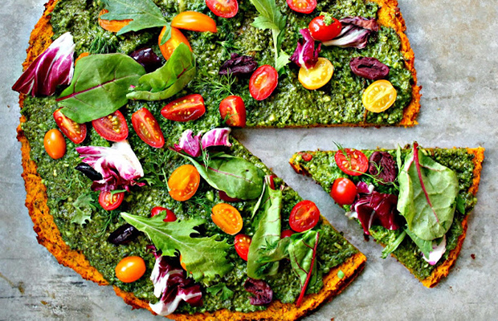
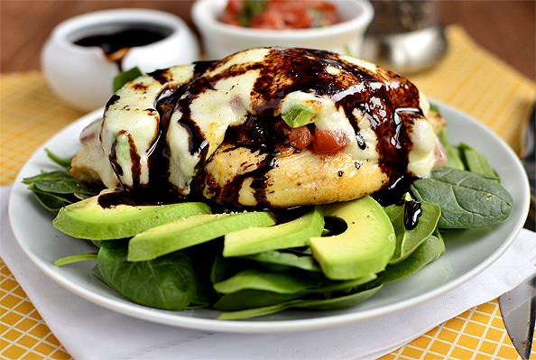
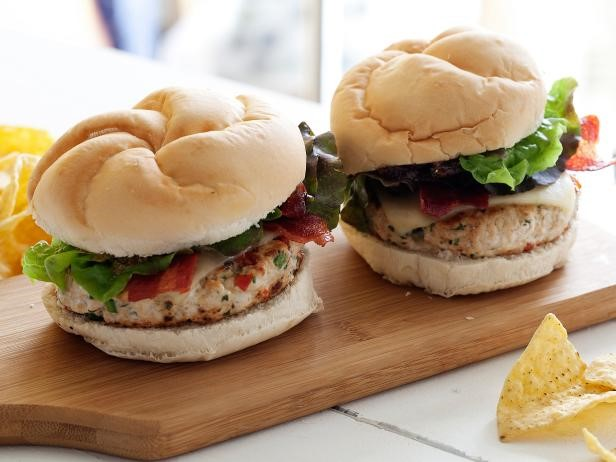
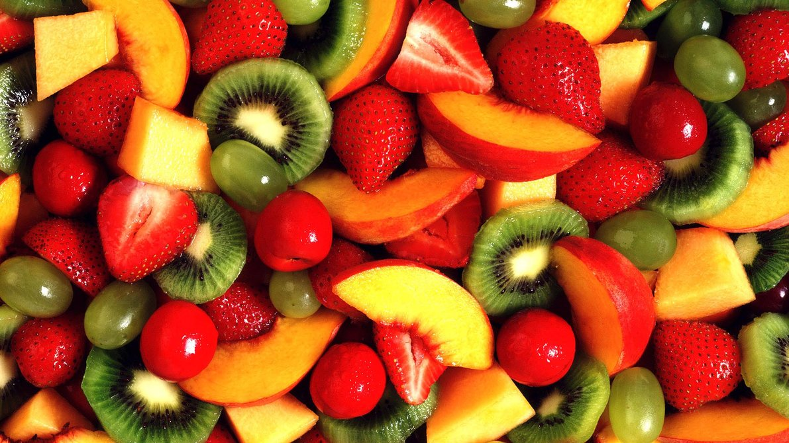

Squash Pizza
http://wholeheartedeats.com

Avocado, Mozzerella, Brushetta Chicken
http://iowagirleats.com

Southwest Turkey Burger
http://foodnetwork.com

Strawberries 'n' Cream Smoothie Bowl
http://buzzfeed.com

Pomelo Sorbet
http://andrewzimmern.coms